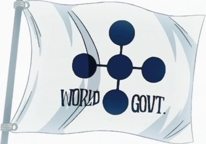
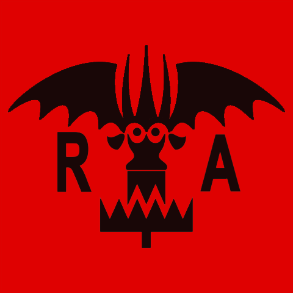

El Gobierno Mundial (世界政府 Sekai Seifu) es una organización política que abarca la mayor parte del mundo, está dirigida por los Cinco Ancianos quienes en realidad responden ante un gobernante que permanece en la clandestinidad, conocido simplemente como Imu, cuya existencia dentro del Gobierno Mundial no es conocida por el mundo en general. Ésta entidad se estableció hace ochocientos años tras el fin del Siglo Vacío
El Ejército Revolucionario (革命軍 Kakumei Gun) (o también Armada Revolucionaria), es una organización bélica extendida alrededor del mundo, basada en los ideales de la libertad y la igualdad. Su base estaba situada en la tierra rocosa y nevada de Baltigo hasta su traslado al Reino Kamabakka.
Su líder es Monkey D. Dragon, el criminal más buscado del mundo, por lo que representa una gran amenaza para la estabilidad del sistema político actual, ya que tiene por objetivo derrocar el Gobierno Mundial y terminar con sus ochocientos años de mandato.
